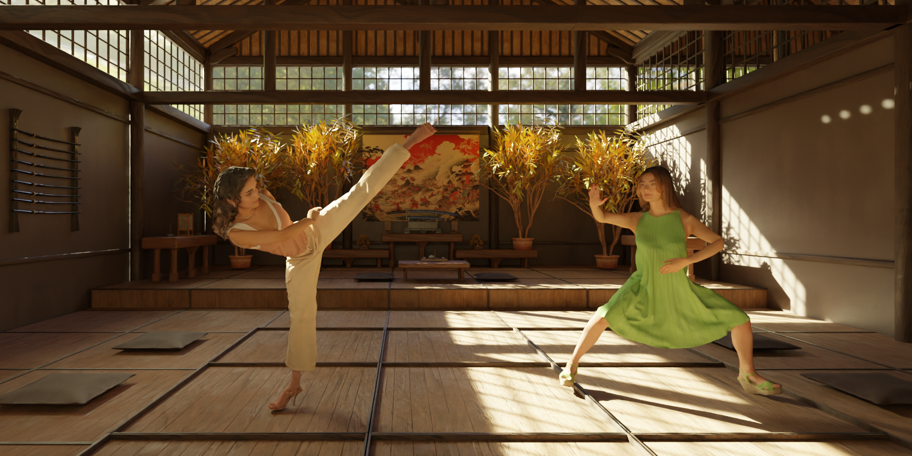
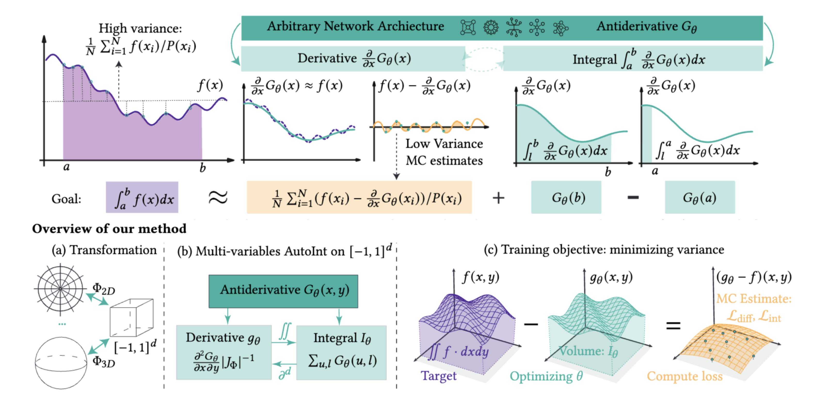
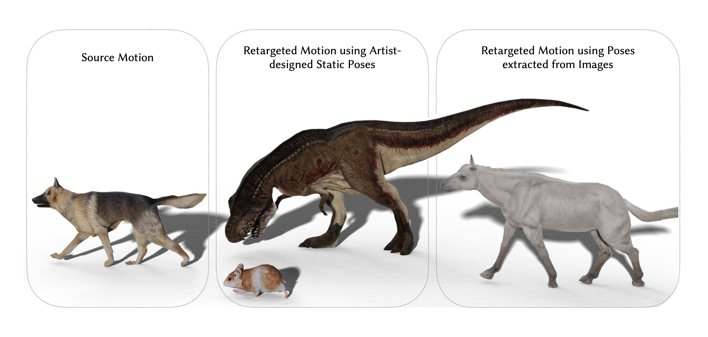
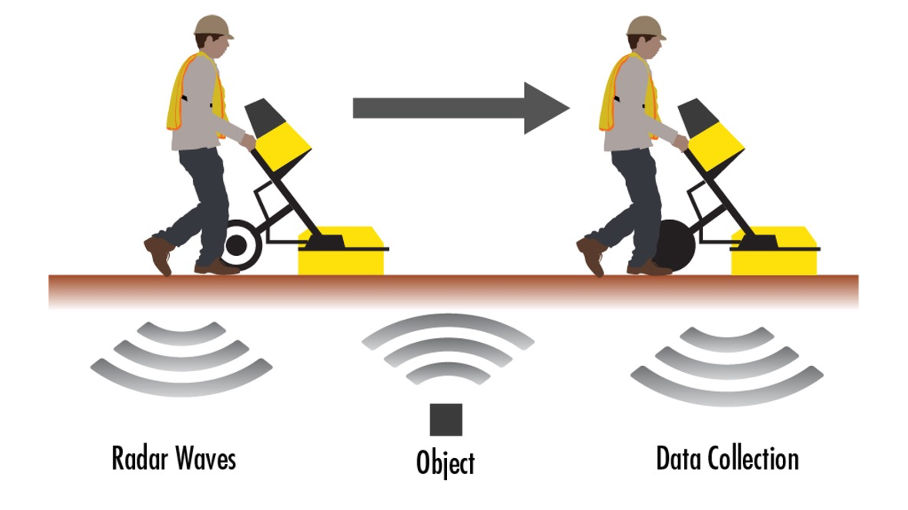
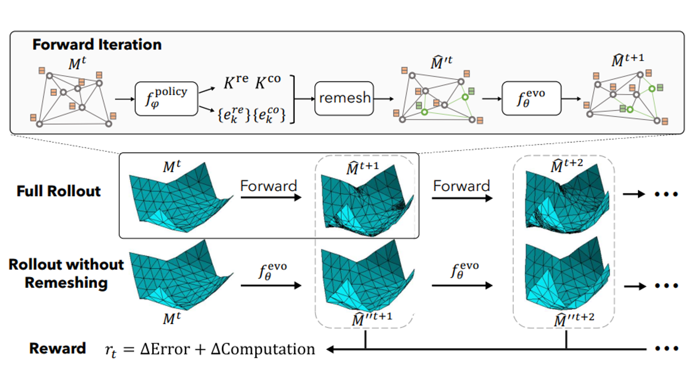
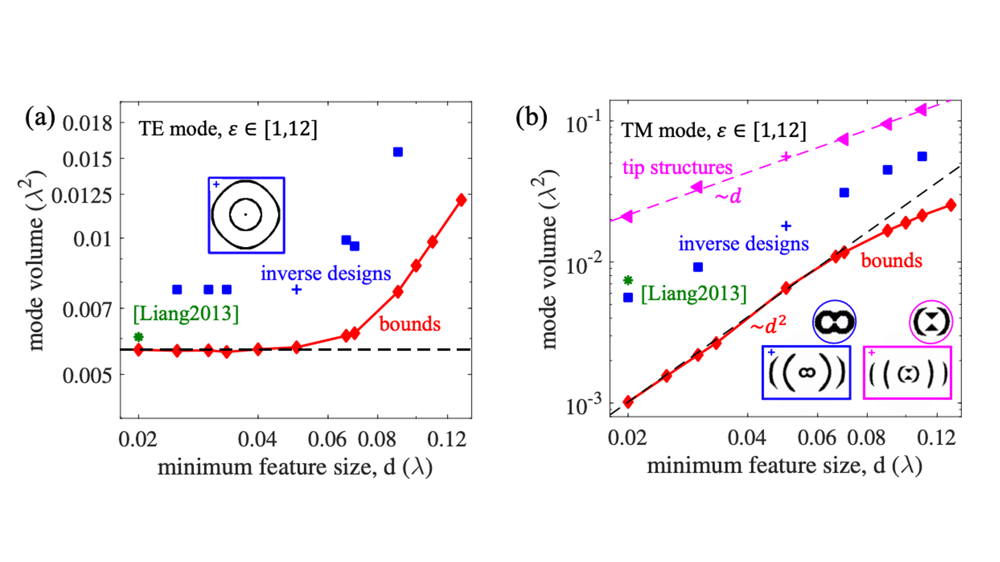
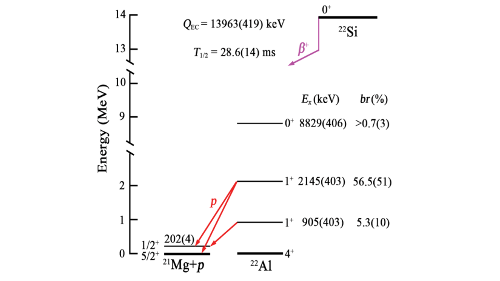

|
|
CoT-VLA: Visual Chain-of-Thought Reasoning for Vision-Language-Action Models
Qingqing Zhao, Yao Lu, Moo Jin Kim, Zipeng Fu, Zhuoyang Zhang, Yecheng Wu, Max Li, Qianli Ma, Song Han, Chelsea Finn, Ankur Handa, Ming-Yu Liu, Donglai Xiang, Gordon Wetzstein, Tsung-Yi Lin
webpage |
pdf |
abstract |
bibtex |
video
Vision-language-action models (VLAs) have shown potential in leveraging pretrained vision-language models and diverse robot demonstrations for learning generalizable sensorimotor control. While this paradigm effectively utilizes large-scale data from both robotic and non-robotic sources, current VLAs primarily focus on direct input--output mappings, lacking the intermediate reasoning steps crucial for complex manipulation tasks. As a result, existing VLAs lack temporal planning or reasoning capabilities. In this paper, we introduce a method that incorporates explicit visual chain-of-thought (CoT) reasoning into vision-language-action models (VLAs) by predicting future image frames autoregressively as visual goals before generating a short action sequence to achieve these goals. We introduce CoT-VLA, a state-of-the-art 7B VLA that can understand and generate visual and action tokens. Our experimental results demonstrate that CoT-VLA achieves strong performance, outperforming the state-of-the-art VLA model by 17% in real-world manipulation tasks and 6% in simulation benchmarks.
@inproceedings{zhao2024cotvla,
author = {Qingqing Zhao, Yao Lu,
Moo Jin Kim, Zipeng Fu,
Zhuoyang Zhang, Yecheng Wu, Max Li,
Qianli Ma, Song Han, Chelsea Finn,
Ankur Handa, Ming-Yu Liu, Donglai Xiang,
Gordon Wetzstein,Tsung-Yi Lin},
title = {CoT-VLA:
Visual Chain-of-Thought Reasoning
for Vision-Language-Action Models},
booktitle = {arXiv},
year = {2024}
}
|
|
|
HumanPlus: Humanoid Shadowing and Imitation from Humans
Zipeng Fu*, Qingqing Zhao*, Qi Wu*, Gordon Wetzstein, Chelsea Finn
CoRL 2024
Best Paper Award Finalist (top 6)
webpage |
pdf |
abstract |
bibtex |
arXiv |
code |
video
One of the key arguments for building robots that have similar form factors to human beings is that we can leverage the massive human data for training. Yet, doing so has remained challenging in practice due to the complexities in humanoid perception and control, lingering physical gaps between humanoids and humans in morphologies and actuation, and lack of a data pipeline for humanoids to learn autonomous skills from egocentric vision. In this paper, we introduce a full-stack system for humanoids to learn motion and autonomous skills from human data. We first train a low-level policy in simulation via reinforcement learning using existing 40-hour human motion datasets. This policy transfers to the real world and allows humanoid robots to follow human body and hand motion in real time using only a RGB camera, i.e. shadowing. Through shadowing, human operators can teleoperate humanoids to collect whole-body data for learning different tasks in the real world. Using the data collected, we then perform supervised behavior cloning to train skill policies using egocentric vision, allowing humanoids to complete different tasks autonomously by imitating human skills. We demonstrate the system on our customized 33-DoF 180cm humanoid, autonomously completing tasks such as wearing a shoe to stand up and walk, unloading objects from warehouse racks, folding a sweatshirt, rearranging objects, typing, and greeting another robot with 60-100% success rates using up to 40 demonstrations.
@inproceedings{fu2024humanplus,
author = {Fu, Zipeng and Zhao, Qingqing
and Wu, Qi and Wetzstein, Gordon
and Finn, Chelsea},
title = {HumanPlus: Humanoid Shadowing
and Imitation from Humans},
booktitle = {arXiv},
year = {2024}
}
|
|

|
PhysAvatar: Learning the Physics of Dressed 3D Avatars
from Visual Observations
Yang Zheng*, Qingqing Zhao*, Guandao Yang, Wang Yifan, Donglai Xiang, Florian Dubost, Dmitry Lagun, Thabo Beeler, Federico Tombari, Leonidas Guibas, Gordon Wetzstein
ECCV 2024
webpage |
pdf |
abstract |
bibtex |
video
Modeling and rendering photorealistic avatars is of crucial importance in many applications. Existing methods that build a 3D avatar from visual observations, however, struggle to reconstruct clothed humans. We introduce PhysAvatar, a novel framework that combines inverse rendering with inverse physics to automatically estimate the shape and appearance of a human from multi-view video data along with the physical parameters of the fabric of their clothes. For this purpose, we adopt a mesh-aligned 4D Gaussian technique for spatio-temporal mesh tracking as well as a physically based inverse renderer to estimate the intrinsic material properties. PhysAvatar integrates a physics simulator to estimate the physical parameters of the garments using gradient-based optimization in a principled manner. These novel capabilities enable PhysAvatar to create high-quality novel-view renderings of avatars dressed in loose-fitting clothes under motions and lighting conditions not seen in the training data. This marks a significant advancement towards modeling photorealistic digital humans using physically based inverse rendering with physics in the loop.
@article{zheng2024physavatar,
title={PhysAvatar: Learning the Physics of Dressed 3D Avatars from Visual Observations},
author={Zheng, Yang and Zhao, Qingqing and Yang, Guandao and Yifan, Wang and Xiang, Donglai and Dubost, Florian and Lagun, Dmitry and Beeler, Thabo and Tombari, Federico and Guibas, Leonidas and others},
journal={arXiv preprint arXiv:2404.04421},
year={2024}
}
|
|

|
Neural Control Variates with Automatic Integration
Zilu Li*, Guandao Yang*, Qingqing Zhao, Xi Deng, Leonidas Guibas, Bharath Hariharan, Gordon Wetzsteinn
SIGGRAPH 2024
abstract |
bibtex |
github |
We present a method that uses arbitrary neural network architectures as control variates with automatic differentiation to create unbiased, low-variance, and numerically stable Monte Carlo estimators for various problem setups.
|
|

|
Pose-to-Motion: Cross-Domain Motion Retargeting with Pose Prior
Qingqing Zhao, Peizhuo Li, Wang Yifan, Olga Sorkine-Hornung, Gordon Wetzstein
SCA 2024
webpage |
pdf |
abstract |
bibtex |
github |
Creating believable motions for various characters has long been a goal in computer graphics. Current learning-based motion synthesis methods depend on extensive motion datasets, which are often challenging, if not impossible, to obtain. On the other hand, pose data is more accessible, since static posed characters are easier to create and can even be extracted from images using recent advancements in computer vision. In this paper, we utilize this alternative data source and introduce a neural motion synthesis approach through retargeting. Our method generates plausible motions for characters that have only pose data by transferring motion from an existing motion capture dataset of another character, which can have drastically different skeletons. Our experiments show that our method effectively combines the motion features of the source character with the pose features of the target character, and performs robustly with small or noisy pose data sets, ranging from a few artist-created poses to noisy poses estimated directly from images. Additionally, a conducted user study indicated that a majority of participants found our retargeted motion to be more enjoyable to watch, more lifelike in appearance, and exhibiting fewer artifacts.
@article{zhao2023pose,
title={Pose-to-Motion: Cross-Domain Motion Retargeting with Pose Prior},
author={Zhao, Qingqing and Li, Peizhuo and Yifan, Wang and Sorkine-Hornung, Olga and Wetzstein, Gordon},
journal={SCA},
year={2024}
}
|
|

|
Deep Born Operator Learning for Reflection
Tomographic Imaging
Qingqing Zhao, Yanting Ma, Petros T. Boufounos,
Saleh Nabi, Hassan Mansour
ICASSP 2023
pdf |
abstract |
bibtex |
github |
video
Recent developments in wave-based sensor technologies, such as ground penetrating radar (GPR), provide new opportunities for accurate imaging of underground scenes. Given measurements of the scattered electromagnetic wavefield, the goal is to estimate the spatial distribution of the permittivity of the underground scenes. However, such problems are highly ill-posed, difficult to formulate, and computationally expensive. In this paper, we propose a physics-inspired machine learning-based method to learn the wave-matter interaction under the GPR setting. The learned forward model is combined with a learned signal prior to recover the permittivity distribution of the unknown underground scenes. We test our approach on a dataset of 400 permittivity maps with a three-layer background, which is challenging to solve using existing methods. We demonstrate via numerical simulation that our method achieves a 50% improvement in mean squared error over the benchmark machine learning-based solvers for reconstructing layered underground scenes.
@inproceedings{BornGPR,
title={Deep Born Operator Learning for Reflection Tomographic Imaging},
author={Qingqing Zhao*, Yanting Ma, Petros T. Boufounos,
Saleh Nabi, Hassan Mansour}
journal={under_review},
year={2022}
}
|
|

|
Learning Controllable Adaptive Simulation
for Multi-resolution Physics
Tailin Wu*, Takashi Maruyama*, Qingqing Zhao*,
Gordon Wetzstein, Jure Leskovec
ICLR 2023, Spotlight
webpage |
OpenReview |
pdf |
abstract |
bibtex |
github |
Simulating the time evolution of physical systems is pivotal in many scientific and engineering problems. An open challenge in simulating such systems is their multi-scale dynamics: a small fraction of the system is extremely dynamic, and requires very fine-grained resolution, while a majority of the system is changing slowly and can be modeled by coarser spatial scales. Typical learning-based surrogate models use a uniform spatial scale, which needs to resolve to the finest required scale and can waste a huge compute to achieve required accuracy. In this work, we introduce Learning controllable Adaptive simulation for Multi-scale Physics (LAMP) as the first full deep learning-based surrogate model that jointly learns the evolution model and optimizes appropriate spatial resolutions that devote more compute to the highly dynamic regions. LAMP consists of a Graph Neural Network (GNN) for learning the forward evolution, and a GNN-based actor-critic for learning the policy of spatial refinement and coarsening. We introduce learning techniques that optimizes LAMP with weighted sum of error and computational cost as objective, which allows LAMP to adapt to varying relative importance of error vs. computation tradeoff at inference time. We test our method in a 1D benchmark of nonlinear PDEs and a challenging 2D mesh-based simulation. We demonstrate that our LAMP outperforms state-of-the-art deep learning surrogate models with up to 60.5\% error reduction, and is able to adaptively trade-off computation to improve long-term prediction error.
@inproceedings{Tailingraphpde,
title={Learning Controllable Adaptive Simulation
for Multi-scale Physics},
author={Tailin Wu, Takashi Maruyama,
Qingqing Zhao, Gordon Wetzstein,
Jure Leskovec}
journal={ICLR},
year={2023}
}
|
|
|
Learning to Solve PDE-constrained Inverse Problems
with Graph Networks
Qingqing Zhao, David B. Lindell, Gordon Wetzstein
ICML 2022
webpage |
abstract |
bibtex |
github |
video
Learned graph neural networks (GNNs) have recently been established as fast and accurate alternatives for principled solvers in simulating the dynamics of physical systems. In many application domains across science and engineering, however, we are not only interested in a forward simulation but also in solving inverse problems with constraints defined by a partial differential equation (PDE). Here we explore GNNs to solve such PDE-constrained inverse problems. Given a sparse set of measurements, we are interested in recovering the initial condition or parameters of the PDE. We demonstrate that GNNs combined with autodecoder-style priors are well-suited for these tasks, achieving more accurate estimates of initial conditions or physical parameters than other learned approaches when applied to the wave equation or Navier-Stokes equations. We also demonstrate computational speedups of up to 90x using GNNs compared to principled solvers.
@inproceedings{qzhao2022graphpde,
title={Learning to Solve PDE-constrained
Inverse Problems
with Graph Networks},
author={Qingqing Zhao and David B. Lindell
and Gordon Wetzstein}
journal={ICML},
year={2022}
}
|
|

|
Minimum Dielectric-Resonator Mode Volumes
Qingqing Zhao, Lang Zhang, Owen D. Miller
pdf |
abstract |
bibtex |
We show that global lower bounds to the mode volume of a dielectric resonator can be computed via Lagrangian duality. State-of-the-art designs rely on sharp tips, but such structures appear to be highly sub-optimal at nanometer-scale feature sizes, and we demonstrate that computational inverse design offers orders-of-magnitude possible improvements. Our bound can be applied for geometries that are simultaneously resonant at multiple frequencies, for high-efficiency nonlinear-optics applications, and we identify the unavoidable penalties that must accompany such multiresonant structures.
@misc{qzhaomodev,
url = {https://arxiv.org/abs/2008.13241},
author = {Qingqing Zhao and Lang Zhang and Owen D. Miller},
title = {Minimum Dielectric-Resonator Mode Volumes},
publisher = {arXiv},
year = {2020},
}
|
|

|
Large Isospin Asymmetry in 22Si/22O Mirror
Gamow-Teller Transitions
Reveals the Halo Structure of 22Al
J. Lee, et. al. (RIBLL Collaboration)
Physical Review Letters, 2020
pdf |
abstract |
β-delayed one-proton emissions of 22Si, the lightest nucleus with an isospin projection Tz ¼ −3, are studied with a silicon array surrounded by high-purity germanium detectors. Properties of β-decay branches and the reduced transition probabilities for the transitions to the low-lying states of 22Al are determined. Compared to the mirror β decay of 22O, the largest value of mirror asymmetry in low-lying states by far, with δ ¼ 209ð96Þ, is found in the transition to the first 1þ excited state. Shell-model calculation with isospin-nonconserving forces, including the T ¼ 1, J ¼ 2, 3 interaction related to the s1=2 orbit that introduces explicitly the isospin-symmetry breaking force and describes the loosely bound nature of the wave functions of the s1=2 orbit, can reproduce the observed data well and consistently explain the observation that a large δ value occurs for the first but not for the second 1þ excited state of 22Al. Our results, while supporting the proton-halo structure in 22Al, might provide another means to identify halo nuclei.
|
Website template from here
|
|
{kind=link}